One stone. Five faiths.
Three centuries. No parallel.
Episcopal chapel · Army post chapel · Lutheran church · Private residence · Private castle
On the morning of September 12th, 1891, a cornerstone was set into the soft earth of Sullivan's Island's western end. The architect was W. W. Deveaux of New York; the builder, Robert McCarrel of Charleston; the style, "Medieval Gothic"; the material — rubble granite, rough-cut, uncoursed, as honest as any wall on the Carolina coast.
The island had been waiting for this building for a generation. An earlier Episcopal church — Grace Church — had been built from a converted lazaretto, a quarantine house, and had been shelled to its walls by Union batteries on Morris Island during the Civil War. For nearly three decades, lay reader W. G. Mazyck held services in a borrowed Presbyterian church. The Chapel of the Holy Cross was the island finally exhaling.
The contract cost was just over $6,000. What $6,000 bought in 1891 was walls of extraordinary thickness, deeply recessed pointed-arch window openings, open timber trusses and hammer beams carrying a nave ceiling that turned sound into something sacred, and a corner bell tower that gave this modest mission chapel the silhouette of something three centuries older.
The consecration came exactly four years after the cornerstone, September 12th 1895 — the building's own birthday. Bishop Ellison Capers officiated. Inside: a memorial stained-glass window for Miss Ella M. Benjamin; a silver communion service dedicated to the Faithful Departed; a bell, now hung; cement walks outside, now laid. It was, at last, complete.
The Chapel · Interior
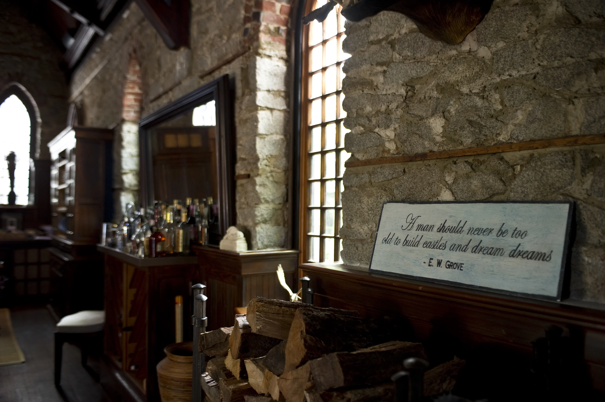


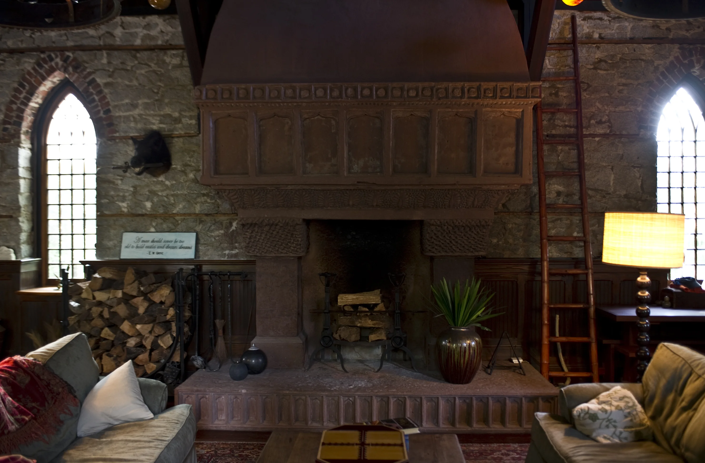
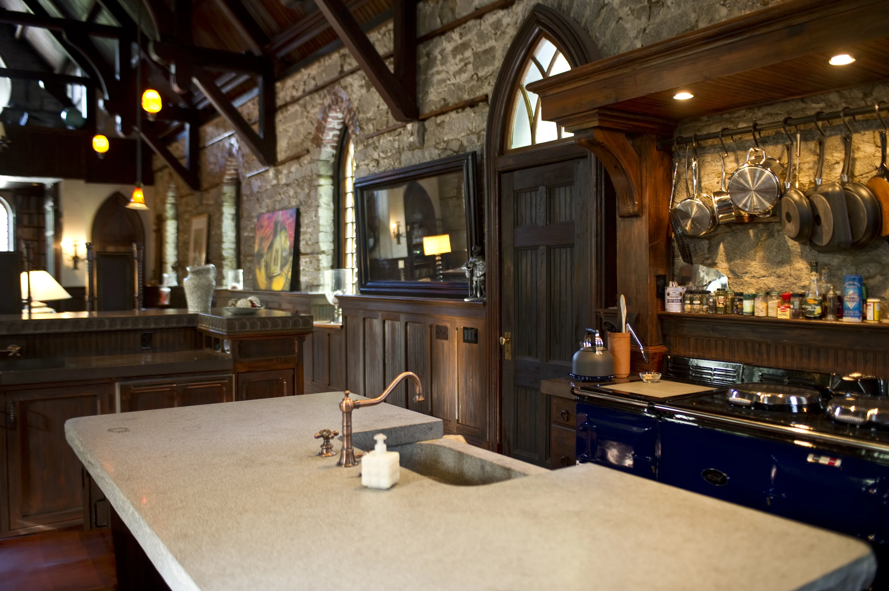
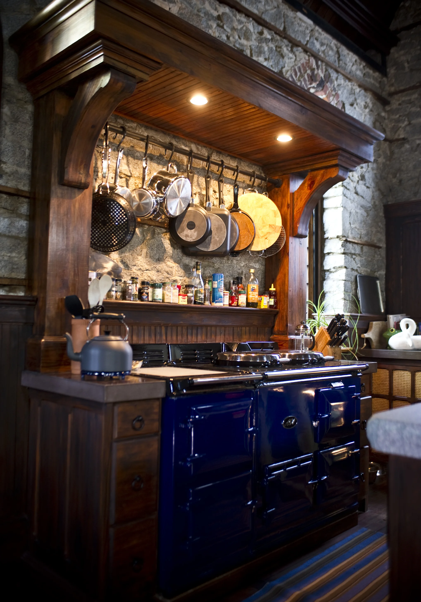
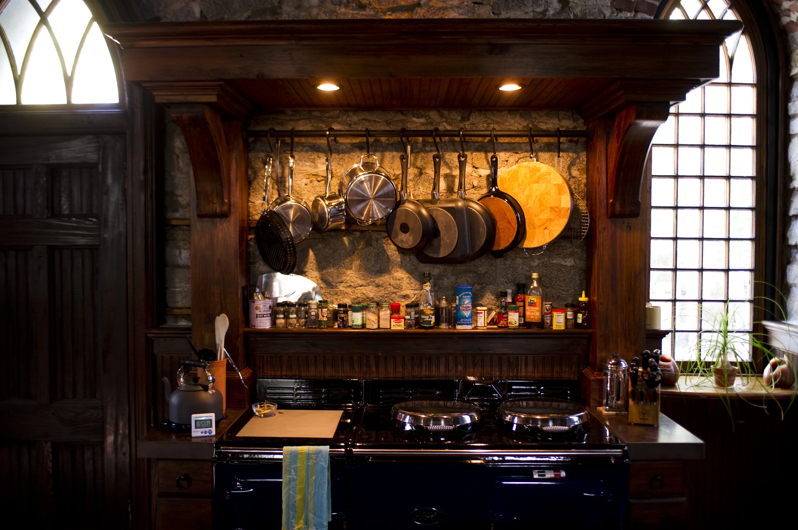
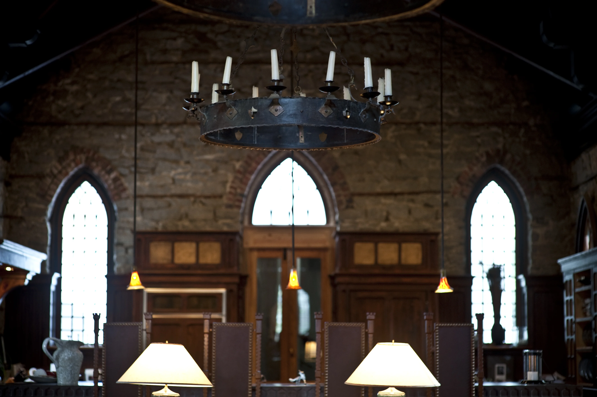
"The stone nave was bare, its tall ceiling carried by open timber trusses and hammer beams — light entering only through the deep reveals of pointed-arch windows."— Witold Rybczynski, The Pennsylvania Gazette
The Forty-Year Garrison
In 1902 the federal government moved to condemn the Chapel of the Holy Cross. Fort Moultrie was expanding its Endicott-era coastal defenses — disappearing artillery carriages, minefields, rapid-fire guns tracking the harbor mouth. The trustees agreed to sell. Compensation: $9,000. The keys changed hands in 1907. For forty years thereafter, soldiers of Fort Moultrie married here, prayed here, and returned from war here. The granite walls received their prayers the same way they had received the Episcopal liturgy: without judgment, without preference, without end.
The congregation took what it could — the memorial stained glass, the silver communion service, the chancel beams — to a new chapel at 2520 Middle Street, first used in June 1908. When Fort Moultrie was deactivated in 1947, the building passed through a quiet relay: War Assets Administration → J.C.W. Bischoff → the Town → the South Carolina Lutheran Synod. Pastor J. Marion Rhoden was appointed in 1952; fifty charter members, the same bare granite walls. In 1972 the congregation relocated to Isle of Palms and became St. Mark's. The chapel was deconsecrated.
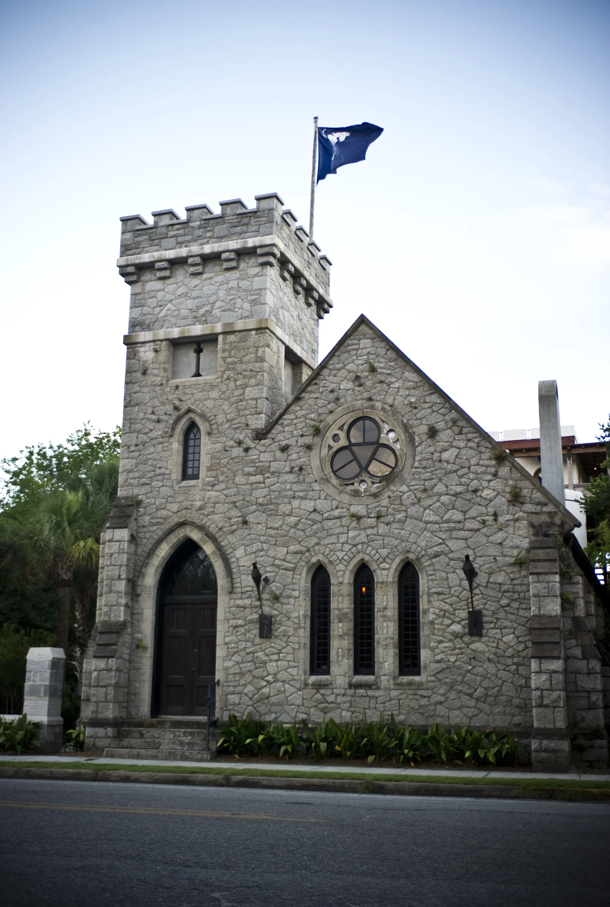
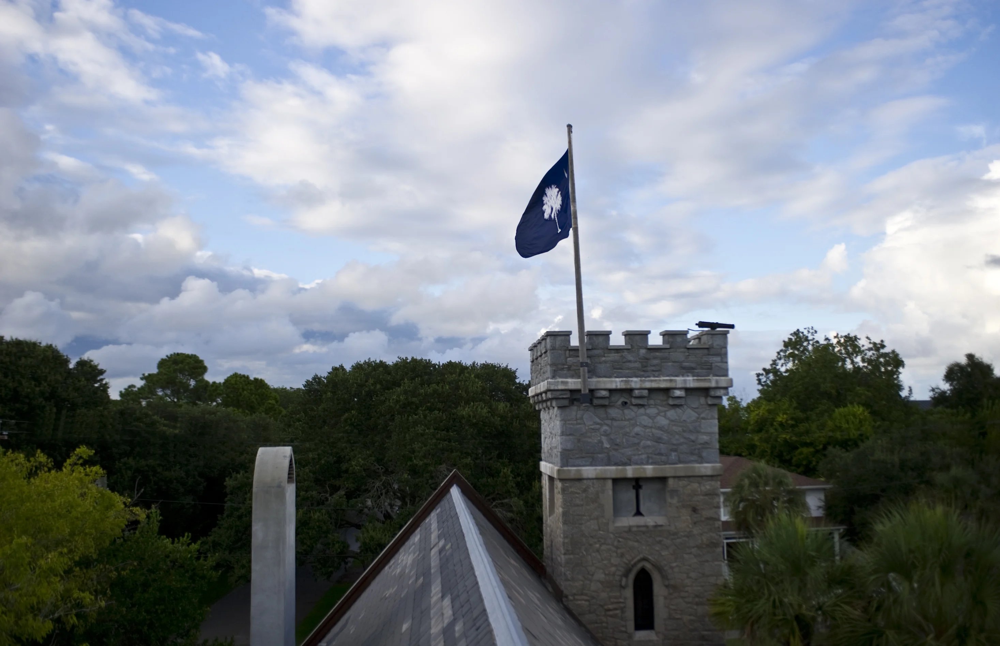
In 2002, a plan to relocate the entire structure to the I'On development in Mount Pleasant was floated — and blocked by local preservation action. The building stayed. From that decision, something remarkable began.
The former chapel became the Winter Hall — kitchen, dining hall, library and minstrel gallery — the heart of a home built for hospitality.
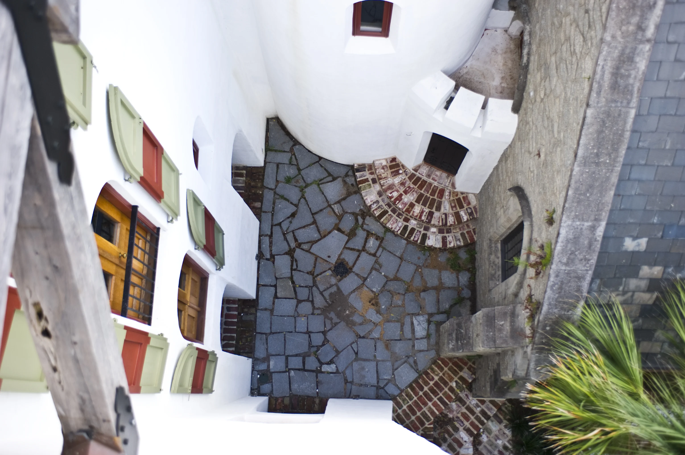

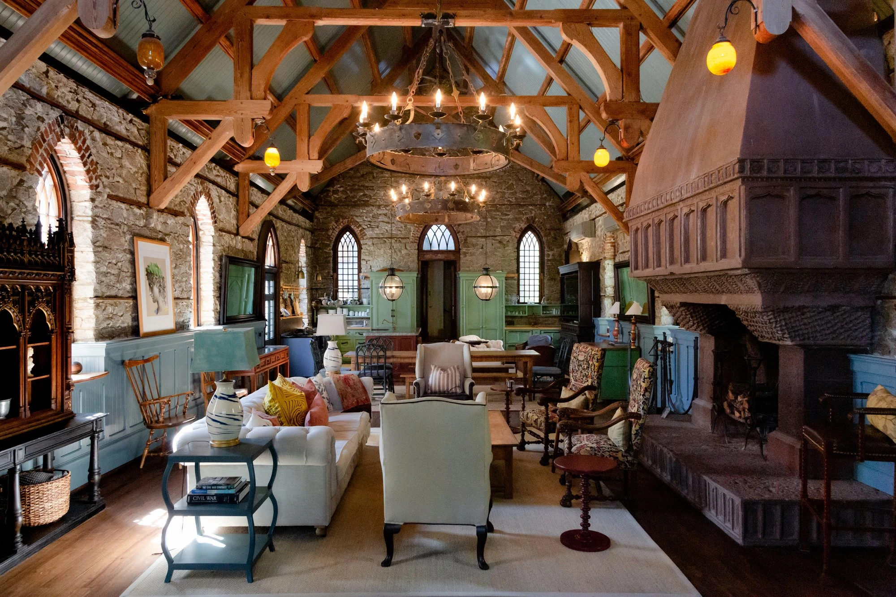
The Physical Seam
Look at the precise line where the 1891 rubble granite meets the 2009 reinforced concrete. It is not hidden. It is not celebrated. It is stated — flatly, honestly — in the way that only material truth can be stated. This is the philosophical core of Fort Sullivan: the belief that time should be legible in stone.
The bell tower's upper portion had been removed at some point in the military era; crenelations were installed in its place. That act — of adding battlements to a chapel tower — was the first step in the building's transformation from sacred space to fortified one. The Keep completed what the Army began.
Completed in 2010. The Mugdock Keep rises from its reinforced concrete core in the Romanesque tradition — rounded arches where the chapel has pointed ones, crenelated parapets that horizon-read as ancient from the street. The intention was to make something that appeared to predate the Gothic church it joined.
Massive cypress timbers carry the great room ceiling. A geothermal heat pump disappears beneath the old stone floors. Rooftop terraces reach toward the Atlantic. The stairwell descends past a painted star vault. By 2010, the transformation first hinted at by the Army's crenelations was total: Fort Sullivan had become something that had never existed before on a Carolina barrier island.
Also known as the Summer Hall, the keep houses the undercroft, bedchambers and associated living spaces. Its arched openings, porches and terraces open the house to the garden, the harbor and the changing coastal light; the Morning Courtyard and Summer Lawn carry its life outdoors.
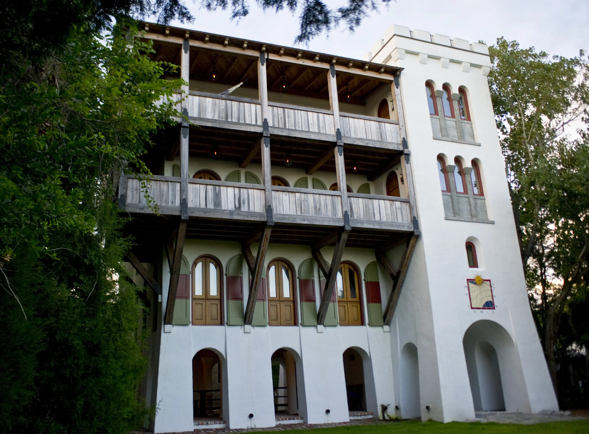
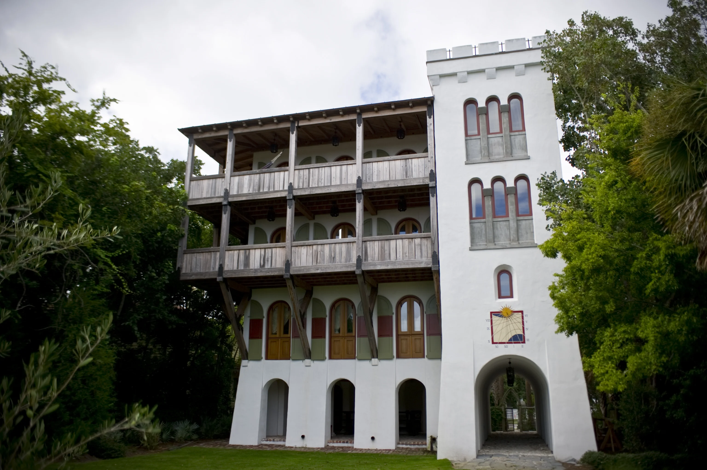
"Designed to look older than the church it joined — the Romanesque as answer to the Gothic, stone answering stone across a century's silence."— New World Byzantine Architecture
The castle's name recalls the island's Revolutionary history. On June 28, 1776, William Moultrie's forces defended the palmetto-log fort on Sullivan's Island against the Royal Navy. That earlier fort and the 1891 chapel are distinct buildings, separated by more than a century. National Park Service ↗